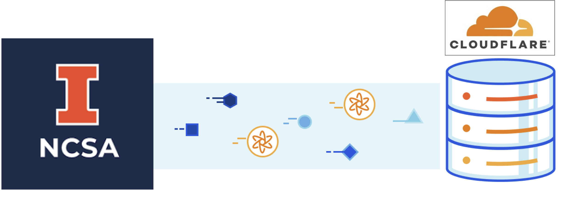
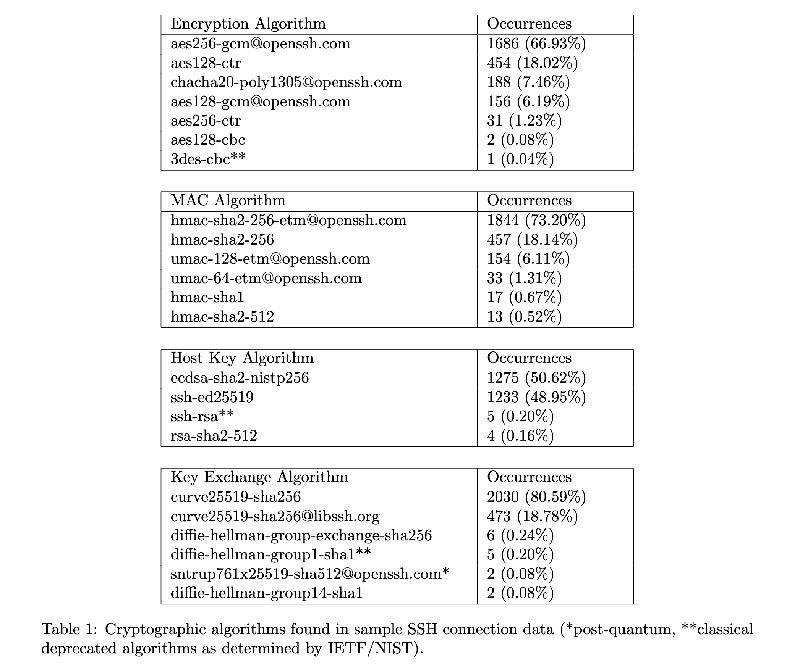
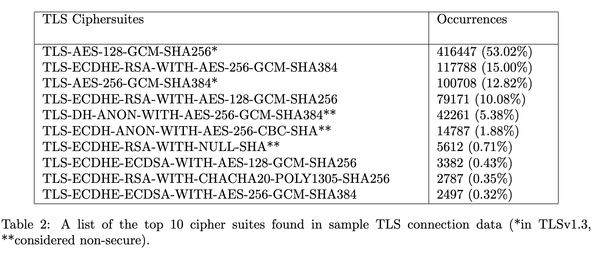

Browser Post-Quantum Key Agreement Check
NCSA Network Security Research

Key Agreement Check Results
Checking connection …
Instructions to enable PQC for client-side (browsers) and server-side
- Chrome 116+
Turn on
TLS 1.3 hybridized Kyber support
(
enable-tls13-kyber) inchrome://flags. - Firefox Nightly 2024-01-18+
Turn on
security.tls.enable_kyberinabout:config. - BoringSSL. Upstream only
supports
0x6399; for the others use our old fork. - Open Quantum Safe C library.
- Caddy HTTP server nightly compiled with cfgo.
Snapshot of Post-Quantum Cryptography network protocols measured from NCSA's Zeek connection logs (June 2023.)
 NIST draft key agreements (FIPS 203, FIPS 204, FIPS 205)
Available with TLSv1.3 including HTTP/3 (QUIC)
| Key agreement | TLS identifier | |
|---|---|---|
| X25519Kyber768Draft00 | 0x6399 (recommended) and 0xfe31 (obsolete) |
|
| X25519Kyber512Draft00 | 0xfe30 |
Team
Phuong Cao pcao3@illinois.edu
NCSA SPIN students.
References
[1] Migration to Post-Quantum Cryptography Quantum Readiness: Testing Draft Standards, https://www.nccoe.nist.gov/sites/default/files/2023-12/pqc-migration-nist-sp-1800-38c-preliminary-draft.pdf
[2] Cloudflare research on PQC, https://pq.cloudflareresearch.com/cdn-cgi/trace
[3] Curve25519: New Diffie-Hellman Speed Records, Daniel J. Bernstein, https://link.springer.com/chapter/10.1007/11745853_14